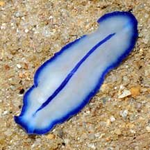
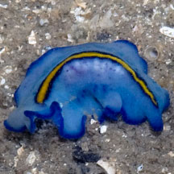
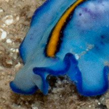
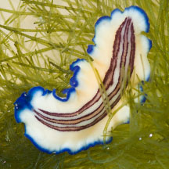
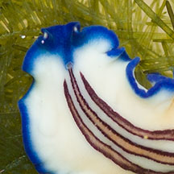
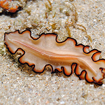

|
|
| flatworms text index | photo index |
| worms > Phylum Platyhelminthes > Class Turbellaria > Order Polycladida |
| Flatworms with one central line How to tell them apart? updated Oct 2019 These small flatworms with one central line along the length of the body may look similar at first glance. Here's more on how to tell them apart. |
 |
 |
Blue-lined flatworm (Pseudoceros concinnus) Body colour creamy-white to slightly bluish-creamy-white. Two fine blue lines in the centre, which are so close to one another that they appear to be one solid blue line. In between the fine blue lines, is the body colour. |
 |
 |
Yellow-lined flatworm (Pseudoceros sp. 3) Body lightly bluish-white to bluish (not solid blue and not white). Central line yellow with dark blue border. |
 Photo shared by Loh Kok Sheng on his blog. |
 |
Braided-line flatworm (Pseudoceros sp. 4) Body bluish-white to bluish (not solid blue and not white). Central line is golden-speckled yellow that looks intermittent by some dull orange, with dark blue border. |
 |
 |
Racing-line flatworm (Pseudoceros bifurcus) Body solid blue to bluish purple (not bluish-white). Central line white (not yellow or golden) becoming orange or red near the head, the line is edged with a thin dark purple border. |
 |
 |
Triple-striped flatworm(Pseudoceros sp. 5) Body white or bluish becoming dark blue at the margin. Three lines in the centre of the body, each line yellow with a fine blue border. In juvenile worms, often only the centre line is clear while the outer two lines are faded. Pseudotentacles all blue, no coloured tips |
 |
Triple-striped flatworm(Pseudoceros sp. 5) Worms with only the centre line clear while the outer two lines are faded may be juveniles of this species. |
 |
 |
Ocher-striped flatworm(Pseudoceros rubrotentaculatus) Body creamy-white with a blue margin. Three lines along the centre of the body, each line ocher bordered dark brown or purplish brown. Pseudotentacles blue with orange tips. |
| More
comparisons These flatworms are much larger, with one central stripe along the length of the body. |
 Pseudobiceros sp. 2 (Brown-stripe flatworm) |
 Nymphozoon orsaki (Orsak's flatworm) |
 Nymphozoon bayeri (Bayer's flatworm) |
| how to tell apart |
References
|